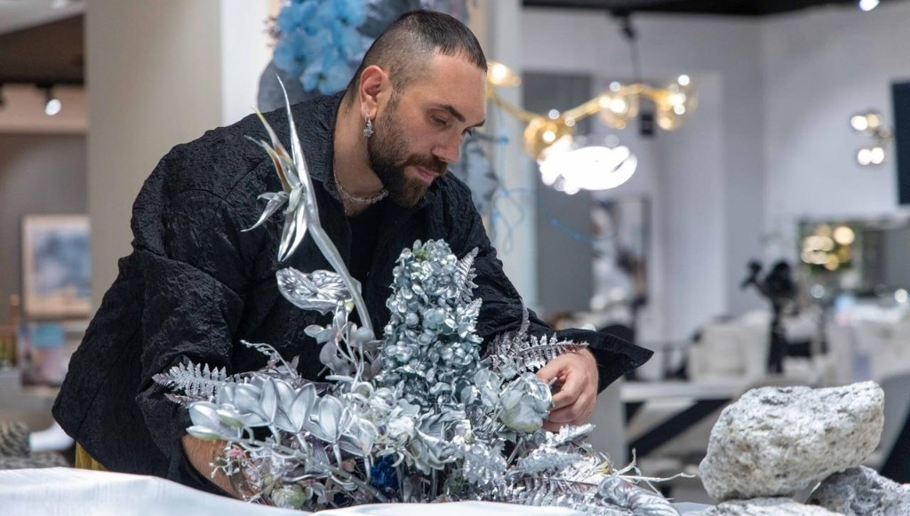

The botanical and Floral design institute at Urartu

Located in Al Serkhal avenue DXB, the Botanical Studies program is conceived as a contemporary design institution committed to the study of floral artistry as both a craft and cultural practice.
This program positions floristry at the intersection of material exploration, spatial design, and visual communication.
Students are encouraged to think critically about form, color, structure, and narrative, incorporating botanical elements as the essence within of the curriculum.
Instruction focuses on the creation of hand-tied bouquets, table arrangements, and larger sculptural compositions, gradually expanding towards spatial and installation-based floral work.
Alongside the botanical component, the program develops technical expertise in floral design.
Upon successful completion of the twelve-week program, participants will receive a certificate of completion acknowledging their achievement.
For more inquiries please contact: